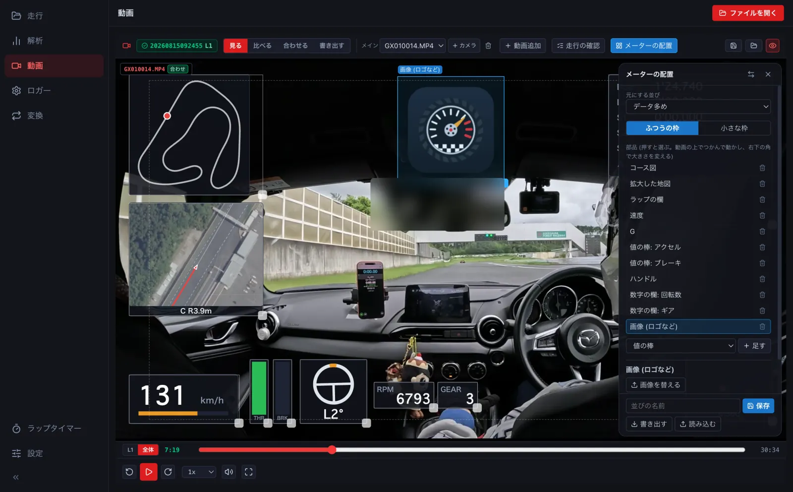
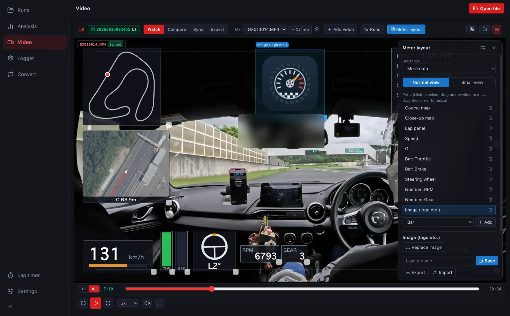
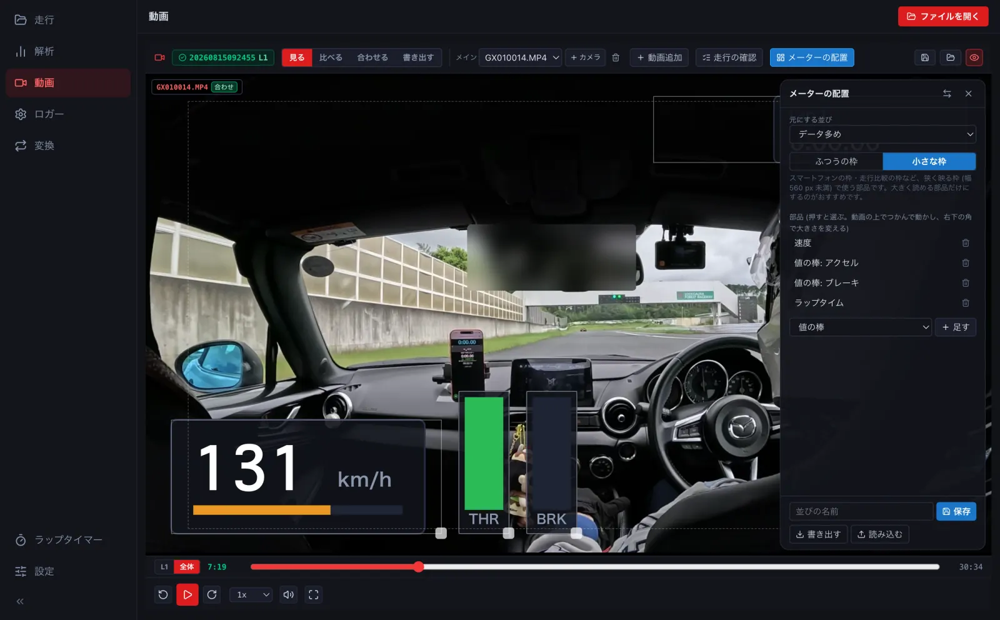
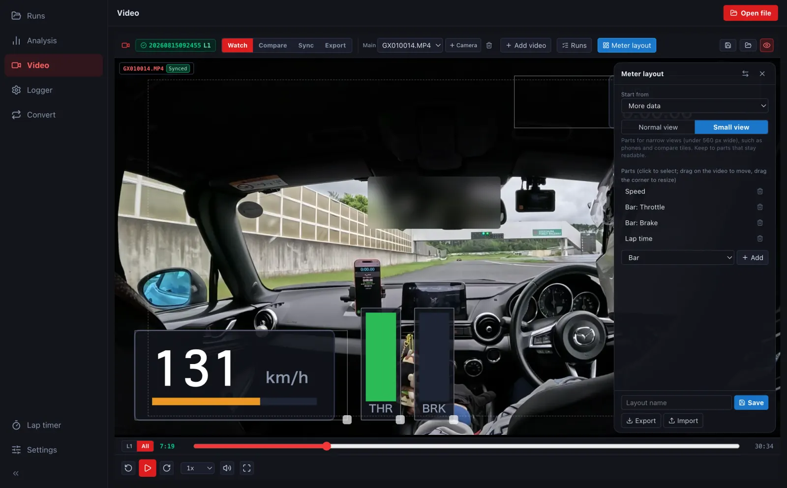
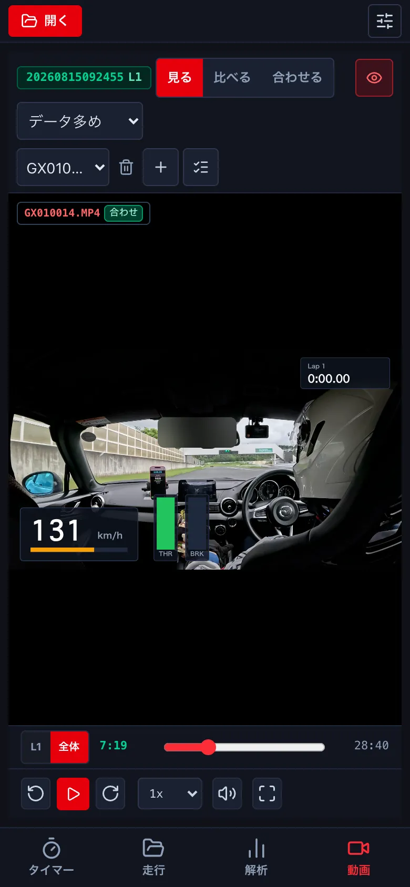
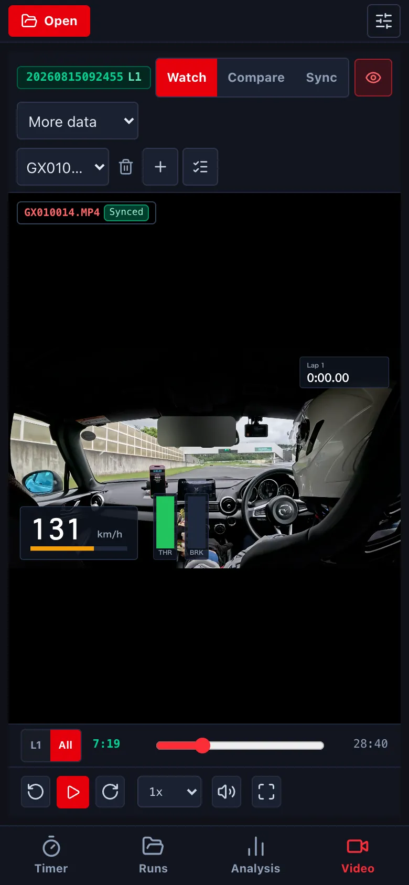

メーターの配置を作るDesigning the meter layout
動画に重ねるメーターの部品を、つかんで動かし、大きさを変え、足して、自分の並びとして保存します。チームや企業のロゴの画像も置けます。Drag, resize and add the gauges shown on the video and save them as your own layout. You can place a team or sponsor logo too.
-
動画の画面の メーターの配置 を押します。部品をつかんで動かし、右下の角で大きさを変えます。右の欄で部品を選ぶと、値・色・目盛りなどを変えられます。Press Meter layout on the video screen. Drag parts to move them and drag the bottom-right corner to resize. Select a part in the right panel to change its value, colour, scale and so on.


- 部品を足すときは、下の選びで種類 (値の棒・数字の欄・ハンドル・グラフの帯・コース図・拡大した地図・タイム差の棒・画像 (ロゴなど) ほか) を選んで 足す を押します。画像は PNG・JPEG などを選びます。To add a part, choose its type (bar, number, steering wheel, graph strip, course map, close-up map, delta bar, image (logo) and more) and press Add. For an image, pick a PNG, JPEG or similar.
-
スマートフォンの枠や走行比較の枠のような狭い枠には、小さな枠 に切り替えて、大きく読める部品だけの並びを作れます。For narrow tiles (phones, comparison tiles), switch to Small view and make a layout with only parts that stay readable.


- 名前を付けて 保存 します。保管場所の overlays フォルダに入るので、iPhone でも選べます。書き出す / 読み込む で人に渡すこともできます。Give it a name and press Save. It is stored in the overlays folder of your storage, so the iPhone can use it too. Export / Import let you share it.
-
スマートフォンでは、動画の上の選びで並びを選びます (作る・直すのはパソコンで)。選んだ並びは、その走行に覚えます。On the phone, choose a layout with the selector above the video (create and edit them on a computer). The choice is remembered for that run.

